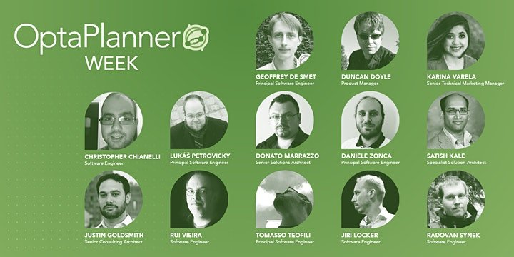

OptaPlanner Week 2020 recordings
It’s a wrap! Last week, during the online OptaPlanner Week event,
we had 10 talks by 13 speakers across 3 days with – per day –
up to 250+ live attendees and 1300+ viewers afterwards.
We’ve split up the talks into separate videos for your convenience, watch them below.
we had 10 talks by 13 speakers across 3 days with – per day –
up to 250+ live attendees and 1300+ viewers afterwards.
We’ve split up the talks into separate videos for your convenience, watch them below.
Big thanks to all speakers for their superb content,
all attendees for their great questions
and especially Karina Varela for organizing, hosting and moderating this event perfectly.
all attendees for their great questions
and especially Karina Varela for organizing, hosting and moderating this event perfectly.

There was a lot of interaction with the audience
through live questions during the sessions and a very active YouTube chat.
Some reactions on Twitter:
through live questions during the sessions and a very active YouTube chat.
Some reactions on Twitter:
- Learnt so much @optaplanner at the #optaplannerweek looking forward to next year’s already :) cracking virtual event! Kudos to everyone that made it happen.
Terry Strachan - Thanks again @optaplanner
for the great week with so many insights into how to build constrained optimization solutions from both a business and also a technical perspective.
Holger Brandl
Day 1
Kickstarting your OptaPlanner project: patterns and common practices
Vehicle routing with OptaPlanner
Visualizing indictments: Explaining the solution to the user and identifying deficient resources
TrustyAI and explanation by example with OptaPlanner
Day 2
Tasks Optimization: understand the chained models
Business optimizer: I bet you I’m better than a human
Constraint Streams 101: The future of score constraints in OptaPlanner
Day 3
Business use cases and the impact of OptaPlanner
Quarkus and OptaPlanner: create a school timetable application
Planning agility: continuous planning, real-time planning and more
Onwards
See you next year!
Author

This post was original published on here.